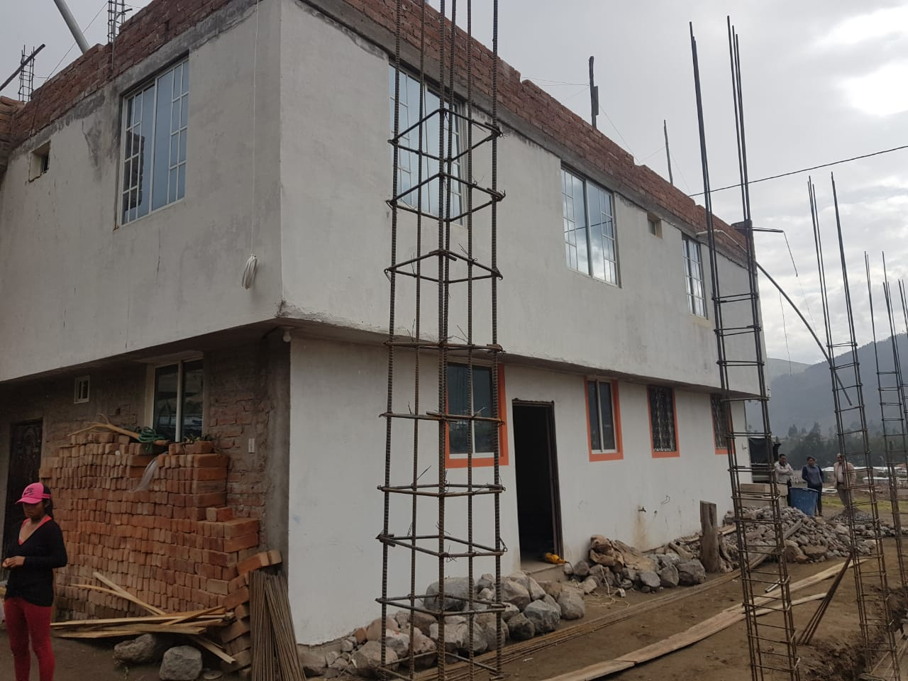
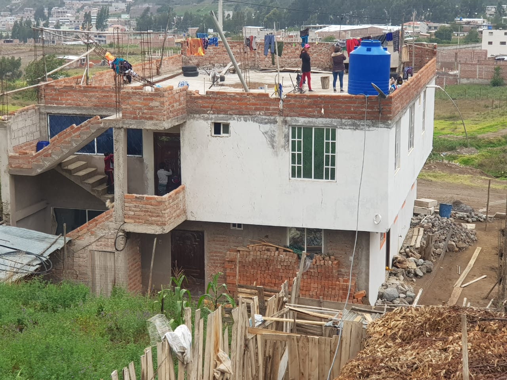
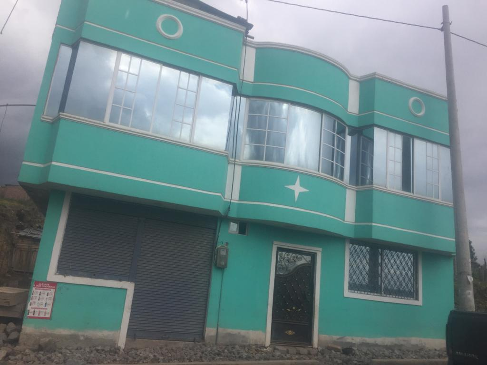

← volver al mapa
Casa - EC-RJ-153966
EC-RJ-153966 · casa · RIOBAMBA, Chimborazo
★ Oferta destacada



Datos del remate
| Avalúo pericial | $37,318 |
| Tipo de bien | casa |
| Área de construcción | 142.30 m² |
| Cantón / Provincia | RIOBAMBA, Chimborazo |
| Dirección / Sector | Corona Real |
| Señalamiento | Tercer Señalamiento |
| Fecha de remate | 2026-09-29 |
| No. de proceso | 06335201701771 |
Análisis vs. mercado
| Avalúo por m² | $262/m² |
| Mediana de mercado en la zona | $603/m² |
| Descuento vs. mercado | 56.5% |
| Comparables usados | 8 |
| Radio de búsqueda | 2000 m |
| Puntaje | 92/100 |
Descripción completa del avalúo
50 % de acciones y derechos del lote 1ubicado en el sector rural de riobamba, denominado durazno pamba en cual se evidencio que presenta una vivienda de dos plantas con una área de 142.30 m2 en la planta baja, y la planta alta con 146.51 m2; estructura de hormigón armado, mampostería de ladrillo enlucida y pintada, columnas de 0.20 cm por 0.20 cm ; losa de hormigón; fachada de color cardenillo y blanco, terraza accesible, gradas externas, 8 ventanas de aluminio blanco con vidrio y refuerzo, 3 puertas metálicas y una puerta lanfor.
Análisis de inversión (IA)
⚠ Dudosa — revisar bienEl descuento del 56.5% sobre la mediana de mercado parece atractivo, pero el dato más crítico es que se trata del 50% de acciones y derechos, no de la propiedad plena, lo que complica significativamente la compra, el uso y la eventual reventa. Ubicado en sector rural de Riobamba (Durazno Pamba), el bien requiere verificación exhaustiva antes de comprometer cualquier dinero.
A favor:
- Descuento significativo del 56.5% respecto a la mediana de mercado, respaldado por 8 comparables, lo que da cierta solidez estadística al cálculo
- Construcción de dos plantas con estructura de hormigón armado y mampostería de ladrillo, materiales de buena durabilidad
- Área de construcción considerable: 142.30 m² planta baja + 146.51 m² planta alta, totalizando casi 289 m² construidos
- Avalúo pericial disponible, lo que indica que ya existe una valoración técnica formal
En contra:
- Solo se adquiriría el 50% de acciones y derechos, no la propiedad completa: sin el otro copropietario no se puede disponer libremente del inmueble
- Ubicación en sector rural (Durazno Pamba), lo que puede implicar menor liquidez, menor demanda de mercado y dificultad para revender
- El precio de avalúo pericial ($37,317.83) parece bajo para casi 289 m² construidos, lo que podría reflejar estado deteriorado, conflictos legales o limitaciones del bien
- Las columnas de 0.20 cm x 0.20 cm son dimensiones muy pequeñas para una estructura de dos plantas de hormigón armado, lo que podría indicar un error de medición en el peritaje o una estructura subdimensionada
Riesgos a verificar:
- CRÍTICO: Acciones y derechos al 50% — el comprador no tendría control exclusivo del inmueble; el otro copropietario puede bloquear ventas, arrendamientos o mejoras
- CRÍTICO: Necesario identificar quién es el otro copropietario del 50% restante y si está dispuesto a vender, negociar o si existe conflicto entre partes (probable si es remate judicial)
- Sector rural: verificar acceso por vía pública, disponibilidad de servicios básicos (agua potable, alcantarillado, electricidad) y si el suelo tiene clasificación rural que restrinja usos
- Verificar si el inmueble está ocupado actualmente y por quién — en remates judiciales la desposesión puede ser larga y costosa
- Revisar si existen gravámenes adicionales, hipotecas, embargos o deudas tributarias sobre el predio más allá del proceso judicial en curso
- Dimensiones de columnas reportadas (0.20 cm x 0.20 cm) parecen ser un error en el peritaje o indican columnas muy delgadas; requiere inspección estructural independiente
- El lote es identificado como 'lote 1', verificar si existe subdivisión aprobada y si la vivienda está correctamente inscrita en el Registro de la Propiedad a nombre del ejecutado
- Zona de Chimborazo con riesgo sísmico moderado-alto; evaluar si la construcción cumple normas mínimas de resistencia
Generado por IA a partir de la descripción — no es asesoría legal ni financiera.
Esta ficha es una copia de lo publicado en el sitio oficial de remates
judiciales de la Función Judicial del Ecuador, para consulta — no
reemplaza el expediente judicial. remates.funcionjudicial.gob.ec no da
un link propio por remate, por eso se generó esta página aparte.
Antes de ofertar, el expediente debe revisarlo un abogado.